Imagerie médicale¶
ls
Applications/ Histog_IRM.png Movies/ brain.jpeg mask.bmp
Desktop/ Ho_Reseau@ Music/ brain.jpg mask.png
Documents/ Library/ Pictures/ brain2.jpg tumor.png
Downloads/ Local@ Public/ imagerie.ipynb
import numpy as np
import matplotlib.pyplot as plt
from matplotlib.image import imread
brain = imread('brain.jpg')
brain.shape
(202, 165, 3)
brain2 = imread('brain2.jpg')
brain2.shape
(279, 216, 3)
tumor = imread('tumor.png')
tumor.shape
(419, 344, 4)
print(tumor[100, 100])
[0.40392157 0.40392157 0.40392157 1. ]
plt.imshow(brain);
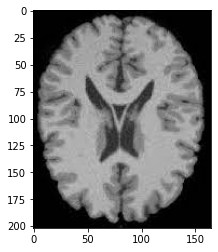
plt.imshow(brain2);
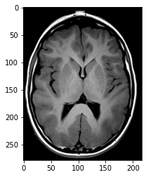
plt.imshow(tumor);
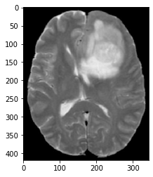
brain = brain[:,:,0]
brain.shape
(202, 165)
plt.imshow(brain);
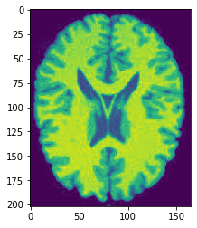
brain2 = brain2[:,:,0]
print(brain2.shape)
plt.imshow(brain2);
(279, 216)
tumor = tumor[:,:,0]
print(tumor.shape)
(419, 344)
plt.imshow(brain);
plt.colorbar();
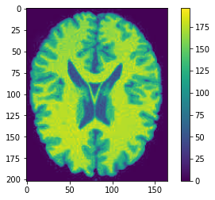
plt.imshow(tumor, cmap='hot')
plt.colorbar();
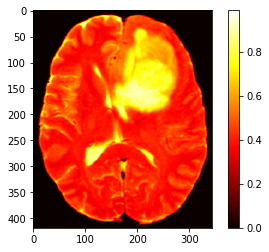
plt.hist(brain.ravel(), bins=100, range=(0.0, 200));
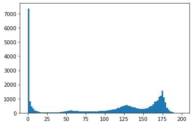
brain.max()
196
gm = brain.copy() * 0
wm = brain.copy() * 0
for i in range(brain.shape[0]):
for j in range(brain.shape[1]):
if 70 <= brain[i,j] < 150:
gm[i,j] = 1
elif 150 <= brain[i,j] <= 255:
wm [i,j] = 1
plt.imshow(np.hstack([gm, wm]));
plt.title('gray matter vs. white matter')
Text(0.5, 1.0, 'gray matter vs. white matter')
plt.imshow(gm)
plt.colorbar();
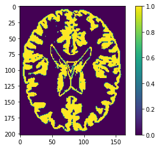
plt.hist(brain.ravel(), bins=50, range=(25, 200));
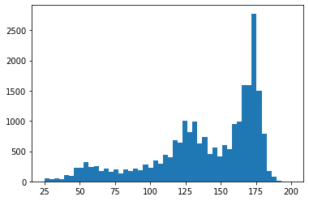
plt.imshow(wm, cmap='gray')
plt.colorbar();
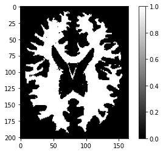
plt.imshow(csf, cmap='gray')
plt.colorbar();
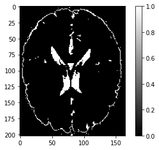
def classification(img, s1, s2, s3):
gm = brain.copy() * 0
wm = brain.copy() * 0
csf = brain.copy() * 0
for i in range(brain.shape[0]):
for j in range(brain.shape[1]):
if s1 <= brain[i,j] < s2:
csf[i,j] = 1
elif s2 <= brain[i,j] < s3:
gm[i,j] = 1
elif s3 <= brain[i,j] <= 255:
wm [i,j] = 1
return gm, wm, csf
gm, wm, csf =classification(brain2, 17, 50, 150)
plt.hist(brain2.ravel(), bins=30, range=(2, 200));
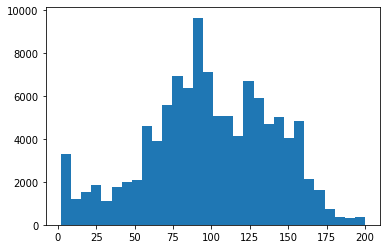
plt.hist(brain.ravel(), bins=100, range=(2, 200));
plt.text(50, 200, 'csf')
plt.text(125, 600, 'gm')
plt.text(165, 600, 'wm')
Text(165, 600, 'wm')
plt.imshow(brain, cmap='gray')
<matplotlib.image.AxesImage at 0x111dbf510>
plt.imshow(brain > 170)
<matplotlib.image.AxesImage at 0x1137ecb10>
plt.imshow(150 < brain < 175);
---------------------------------------------------------------------------
ValueError Traceback (most recent call last)
<ipython-input-96-943e6c3eee90> in <module>
----> 1 plt.imshow(150 < brain < 175);
ValueError: The truth value of an array with more than one element is ambiguous. Use a.any() or a.all()
plt.imshow(brain < 75);
plt.colorbar()
<matplotlib.colorbar.Colorbar at 0x11414f350>
gm = gm * 3
wm = wm * 2
segmentation = gm+csf+wm
np.unique(segmentation)
plt.imshow(segmentation,cmap = 'hot')
plt.colorbar();
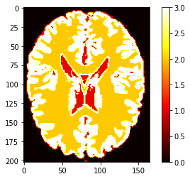
All = np.hstack([gm, wm, csf])
plt.imshow(All, cmap = 'hot');

Segmentation¶
segmentation = np.zeros_like(brain)
n, m = brain.shape
for i in range(n):
for j in range(m):
if 15 <= brain[i,j] < 70:
segmentation[i,j] = 1
elif 70 <= brain[i,j] < 150:
segmentation[i,j] = 2
elif 150 <= brain[i,j] <= 255:
segmentation [i,j] = 3
plt.imshow(segmentation, cmap = 'hot')
plt.colorbar();
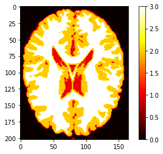
plt.imshow(segmentation==3, cmap = 'hot')
<matplotlib.image.AxesImage at 0x1147c9990>